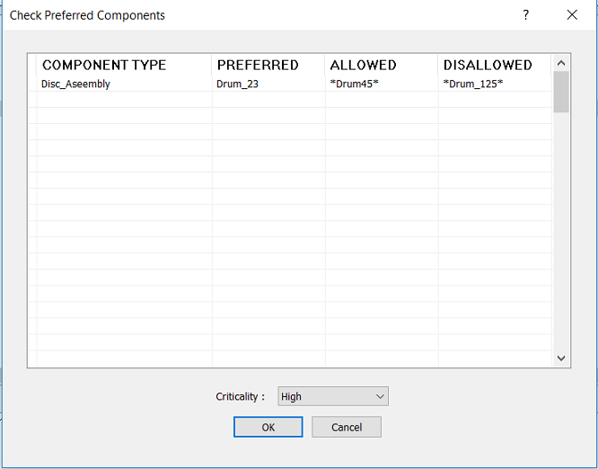

アセンブリには、ユーザーが設定した推奨または許可されたコンポーネントのリストが含まれている必要があります。
多くの組織では、コンポーネントを変更または置き換えることで、類似した製品を異なるバージョンやシリーズとして製造しています。これは、市場の需要に応じて、異なる機能やコスト帯で製品を提供するために行われています。
このような場合、製品やシリーズに応じて、最終アセンブリに推奨コンポーネントおよび許可されたコンポーネントが含まれていることを保証することが重要です。目的は、特定の製品バージョンやシリーズの最終アセンブリから、使用が許可されていないコンポーネントを除外することです。また、組織によっては、却下されたコンポーネントに割り当てられている材質を廃止扱いとする場合もあります。そのため、そのような部品が最終アセンブリとともに出荷されないようにする必要があります。
解析対象となる製品シリーズまたはバージョンに応じて、ルール構成テーブルに、適切なコンポーネントタイプと、推奨、許可、非許可の各コンポーネント名を追加してください。
テーブルに示されているように、非許可コンポーネントはアセンブリに含まれてはなりません。非許可コンポーネントがアセンブリ内に存在する場合、その結果は不合格として表示され、推奨コンポーネント名が提案されます。一方、許可または推奨コンポーネントが存在する場合は、その解析は合格となります。
|
コンポーネントタイプ |
推奨 |
許可 |
非許可 |
|
制御基板 |
2A4296-01 |
P00013-02 |
900-1234 |
|
ギアボックスアセンブリ |
8911-0200 |
- |
8911-0100 |
|
8911-0150 |
|||
|
8911-0300 |
|||
|
8911-0400 |
|||
|
冷却システム |
5C11-0120 |
- |
5C11-0080 |
|
5C11-0090 |
|||
|
5C11-0110 |
|||
|
5C11-0130 |
ユーザーは、Import ボタンを使用して、Excel シートテンプレートに含まれるハードウェアデータを一括でインポートできます。
注記:
ヘッダーは必須ではありません。ユーザーは、Excel シートの最初の 4 列にコンポーネント名を追加できます。
このルールは、トップレベルのアセンブリ部品に対して、DFMPro 設定に基づいて実行できます。
ユーザーは、ワイルドカード文字を使用してコンポーネント名を構成できます。
*dia*（コンポーネント名に dia または DIA が含まれる）
*_dia（名前が _dia または DIA で終わる）
dia*（名前が dia または DIA で始まる）
